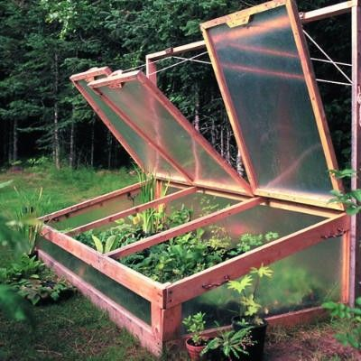
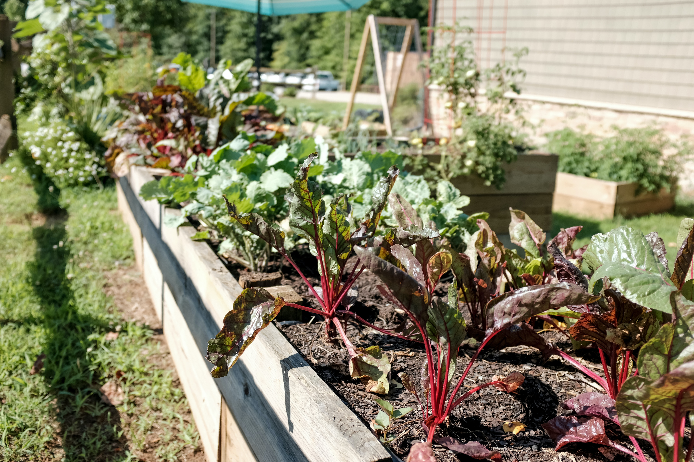
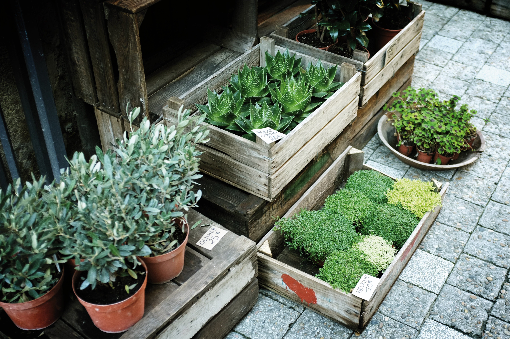

.png)
Project Overview
Bloomin Beds is a Directed Experimental Education / Internship Project developed by Professor Harris's class at Johnson & Wales University. It is an innovative garden bed monitoring system designed to address overheating in garden beds and promote year-round gardening through its integrated ventilation system, which is controlled via software. This allows the garden beds to be utilized effectively even during winter months. The project utilizes a Raspberry Pi board and various sensors to create a user-friendly app and website where students can monitor the health of the plants by collecting valuable data on environmental conditions and plant growth. Additionally, Bloomin Beds simplifies gardening tasks for users, making it an accessible tool for both educational purposes and practical application in agricultural settings.
Our Mission
Our mission is to enable year-round sustainable gardening through innovative technology and education. By combining automated ventilation control with comprehensive environmental monitoring, Bloomin Beds empowers students, culinary programs, and agricultural practitioners to optimize growing conditions, extend growing seasons, and make data-driven decisions. We strive to make advanced gardening technology accessible and practical for both educational settings and real-world agricultural applications.
Key Features
- Software-Controlled Ventilation System: Automated climate control to prevent overheating and enable winter gardening.
- Real-Time Environmental Monitoring: Track temperature, humidity, and soil conditions with live sensor data.
- Year-Round Growing Capability: Extend your growing season through all four seasons, including winter months.
- Plant Health Tracking: Monitor growth patterns and environmental impacts on plant development.
- User-Friendly Interface: Access data and control systems through an intuitive app and website.
- Educational Platform: Hands-on learning tool for students to understand agricultural technology and data analysis.
- Simplified Garden Management: Streamlined controls make complex gardening tasks accessible to all skill levels.
Process - Carousel
-

words -

words -

words
Contributors
Jonathan Lyle Harris
Jonathan Lyle Harris is an educator and designer focused on creating better environments for pedestrians and other non-motorized users. His work centers on human-scale public space, walkability, and the design of safer, more accessible streets and urban amenities.
Michael Dattolo
Michael Dattolo is a product designer and entrepreneur with a hands-on, prototype-driven approach. He focuses on turning early concepts into functional outcomes through practical problem-solving, iterative design, and making-oriented execution.
Mathew Hartung
Mathew Hartung is a product designer with a focus on sustainable design and innovative prototyping. His work explores the intersection of traditional craftsmanship and modern materials, with particular interest in reducing environmental impact through thoughtful material selection and adaptive design solutions.
Keely Doyle
Keely Doyle is a product designer who prioritizes innovative, user-centered solutions. She also brings a craft-oriented perspective through jewelry design, combining creativity, detail, and form-focused thinking.

Zak Vallee
Zak Vallee is an Honors Integrated Product Design student who emphasizes improvement-driven design. He is especially interested in analyzing existing products, identifying opportunities, and refining form, function, and usability through iteration.
Chris Dimovski
Chris Dimovski is an industrial and product designer focused on user-centered solutions that improve performance and everyday experience. His work is grounded in practical problem-solving, balancing function, usability, and real-world constraints.
Joshua Keene
Joshua Keene is an Integrated Product Design graduate with strengths in 3D modeling and system-level thinking. He is skilled in CAD-driven development and technical design work, supporting products from concept through refinement and documentation.
Marshall Hayduk
Marshall Hayduk is a product design student focused on challenging assumptions and pushing beyond standard solutions. He brings a curious, concept-forward mindset to the design process while building a strong base in practical product development.
Peikang Fan
Peikang Fan is an emerging product designer with a strong interest in building a foundation in product thinking and design execution. Their focus centers on developing skills through projects and continued growth in the field.
Tyler Perreault
Tyler Perreault is an aspiring AI-focused professional and student building experience through both academics and real-world work. He is driven, practical, and developing skills at the intersection of emerging technology and day-to-day operations.

Cassandra R
is a product designer at Johnson & Wales University, having skills in construction and prototyping.
Liz Virian
Liz Virian is a graphic designer with strengths in branding, visual identity, and web design. She creates clean, user-friendly design systems across digital and print, translating ideas into consistent, polished visuals that communicate clearly.